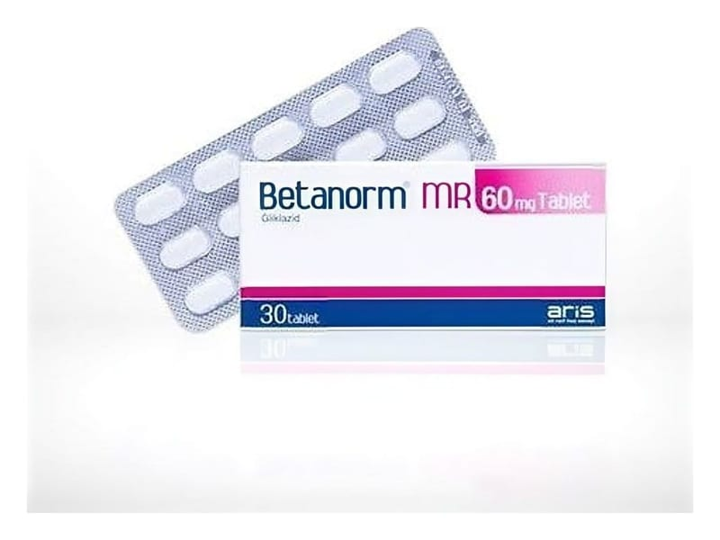

Betanorm MR 30 mg Değiştirilmiş Salımlı Tablet, 60 Adet

Ne için kullanılır
KT · Bölüm 1• BETANORM®MR, beyaz, beyaza yakın, oblong 30, 60 ve 90 tabletten oluşan blister ambalajlarda bulunmaktadır.
• BETANORM®MR, kandaki şeker düzeyini azaltır (sülfonilüre grubuna ait oral antidiyabetik).
• BETANORM®MR, yetişkinlerde, diyet, fiziksel egzersiz ve kilo kaybının tek başına kan şekeri kontrolünü sağlamada yetersiz kaldığı durumlarda, insülinden bağımsız (Tip 2) diyabet (şeker) hastalığının tedavisinde kullanılmaktadır.